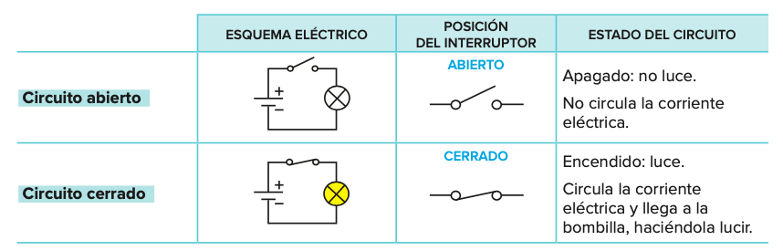
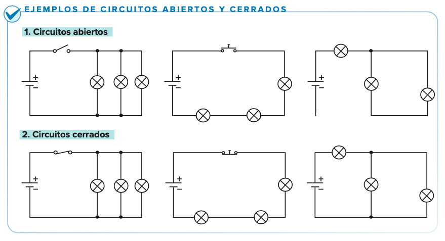
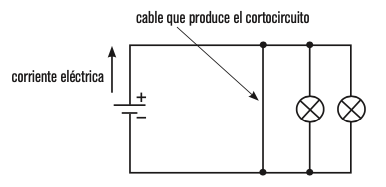
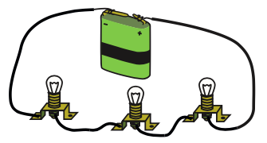
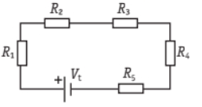
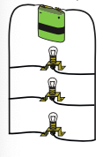
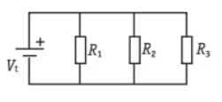
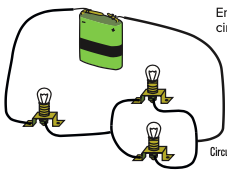
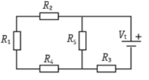

3.4. Circuitos eléctricos abiertos, cerrados y en cortocircuito.
Diccionario
Estabilidad
Definición
La capacidad de un objeto o estructura para mantener su equilibrio y resistir las fuerzas externas que puedan intentar desplazarlo o volcarlo.
Ejemplo
Una mesa de cuatro patas exhibe estabilidad al proporcionar un equilibrio adecuado. Las patas están ubicadas estratégicamente para evitar que la mesa se vuelque fácilmente.
Resistencia
Definición
La capacidad de un material o estructura para soportar y resistir las fuerzas que actúan sobre él sin experimentar deformaciones excesivas o fallos.
Ejemplo
Un puente de suspensión debe ser resistente para soportar el peso de vehículos y personas que cruzan.
Rigidez
Definición
La capacidad de un material o estructura para mantener su forma y resistir deformaciones bajo la aplicación de fuerzas externas.
Ejemplo
Un puente arqueado muestra rigidez al resistir deformaciones bajo carga.
1. Circuito eléctrico abierto y circuito eléctrico cerrado
Un circuito está controlado por interruptores o pulsadores que lo abren o cierran a voluntad.
Un circuito está abierto cuando la energía del generador no llega a los receptores y, por lo tanto, no circula la corriente. Esto puede ocurrir si el interruptor está abierto, pero también por un fallo en el circuito (por ejemplo, si un cable se suelta).
Un circuito está cerrado cuando la energía del generador llega a los receptores y, por lo tanto, hay circulación de la corriente eléctrica.
 
Lectura facilitada
Para que una estructura funcione de manera efectiva, deben cumplirse tres condiciones fundamentales:
Estabilidad: La estructura debe permanecer vertical y evitar el volcamiento. Esto se logra asegurando que su centro de gravedad esté centrado sobre su base. Cuanto más bajo y centrado esté el centro de gravedad, mayor será la estabilidad.
Resistencia: La estructura debe resistir tensiones sin experimentar roturas. La resistencia depende de su forma y del material utilizado en su construcción.
Rigidez: Aunque se espera cierta deformación cuando se aplica fuerza, esta no debe impedir que la estructura cumpla su función de manera efectiva.
2. Cortocircuito
En un circuito eléctrico hay un cortocircuito cuando la corriente eléctrica se transporta por los cables sin que pase por ningún receptor.
Para detectar cortocircuitos hay que tener en cuenta que los electrones recorren siempre el camino más fácil, es decir, circulan por el que oponga menor resistencia. Por ejemplo, en el circuito de la figura, la corriente nunca pasará por las bombillas: se irá por el cable que forma un cortocircuito.

En un circuito con una pila, si unes los dos polos sin pasar por un receptor, se gasta la pila sin producir ningún otro efecto más que un sobrecalentamiento.
Sin embargo, la formación de un cortocircuito en una vivienda es algo muy peligroso: puede motivar un incendio o una descarga eléctrica, ya que la cantidad de energía que transportan los cables de un edificio es muy elevada.
Lectura facilitada
Principios Claves para la Estabilidad, Resistencia y Rigidez de Estructuras:
1. Estabilidad:
Aumentar el tamaño de la base.
Empotrar la parte inferior en el suelo y utilizar una cimentación especial.
Centrar el peso en la parte más baja y, si es necesario, agregar peso artificialmente.
Atirantar la estructura para evitar el vuelco, ampliando el radio de la base mediante tirantes.
2. Resistencia:
La resistencia depende del material, cantidad utilizada y forma de cada componente.
Los materiales comunes se ordenan por resistencia: acero, piedra, hormigón, madera, plástico, hilo, cartón y papel.
3. Rigidez:
A. Elección de la Forma:
Para compresión, usar elementos gruesos y, si es posible, huecos para evitar el pandeo.
Para tracción, aumentar la cantidad de material en el elemento.
Para flexión, incrementar el canto del elemento y concentrar el material en las partes superior e inferior.
B. Uniones entre Elementos:
En estructuras de hormigón armado, entrelazar la armadura de acero.
En estructuras metálicas, usar elementos intermedios como cartelas para mejorar la unión.
C. Triangulación:
Utilizar la triangulación para prevenir deformaciones en estructuras de barras.
Puede aplicarse directamente o mediante arriostramientos adicionales, como cables dispuestos en forma de cruz.
3. En vídeo
Circuito abierto, circuito cerrado y cortocircuito
4. Circuito eléctrico en serie, en paralelo y mixto
Circuitos en serie
Circuito en serie
En él, los receptores se conectan seguidos (uno a continuación del otro), de forma que toda la corriente eléctrica va recorriendo todos los receptores. Hay un solo camino posible para la corriente.

Por todos los receptores circula la misma corriente.
Si uno de los receptores deja de funcionar, no funcionará ninguno, ya que se abre el circuito. Esto ocurre cuando uno de los receptores se funde o si está mal conectado al circuito.
Las bombillas no lucirán mucho, porque la energía que suministra la pila debe repartirse entre las tres.
Circuitos en paralelo
Circuito paralelo
En él, los receptores se conectan en ramales independientes. Hay varios caminos posibles para la corriente.
 
• La corriente no circula por igual en todos los receptores, sino que se debe repartir entre todos los caminos posibles.
• Circulará más corriente por aquel ramal que oponga menor resistencia.
• Si uno de los receptores deja de funcionar, los demás siguen funcionando, porque la corriente puede llegar por otro camino (el circuito se cierra por otro camino).
• Las bombillas lucirán mucho, porque a todas ellas les llega directamente la energía de la pila.
Circuito mixto
Circuito mixto
En él, hay elementos en serie y elementos en paralelo.


5. ¡Vamos a practicar!
Llega el momento de trabajar lo aprendido. Haz las actividades interactivas que hay a continuación. Puedes poner en común tus respuestas con tus compañeros de grupo. ¡No olvides que estamos trabajando en cooperativo!
Circuitos en serie, en paralelo y mixtos
Pincha en el siguiente enlace y contesta a las preguntas..
Circuitos en serie, en paralelo y cortocircuito.
Pincha en el siguiente enlace y contesta a las preguntas.
Motus dice ¿Qué es lo que más te ha gustado de la interacción con tus compañeros?
¿Te ha llamado la atención alguna pregunta planteada por alguno de ellos? ¿Se lo has dicho? ¡A todos y todas nos gusta saber lo que hacemos bien!